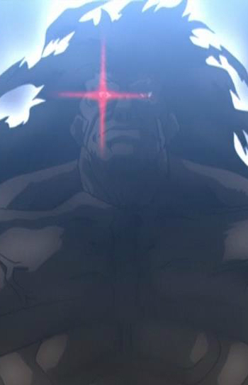

Tadahisa Saizen is a Japanese voice actor. His notable roles are Berserker from Fate/Stay Night and Shiro from UFO Ultramaiden Valkyrie.
- Gender: Male
- Birthday: September 25, 1964
- Hometown: Osaka, Japan

| |
Tadahisa Saizen is a Japanese voice actor. His notable roles are Berserker from Fate/Stay Night and Shiro from UFO Ultramaiden Valkyrie.
|
|---|
|  | Berserker |
|
Berserker is a swarthy giant with adamantine skin. He wields a colossal stone Axe-Sword, and capable massive destruction with the mere backlash of his swings. He is the servant of Illya. |
Go Back to Main Page |
Go Back to Homepage |
|
|
|
OR |
|